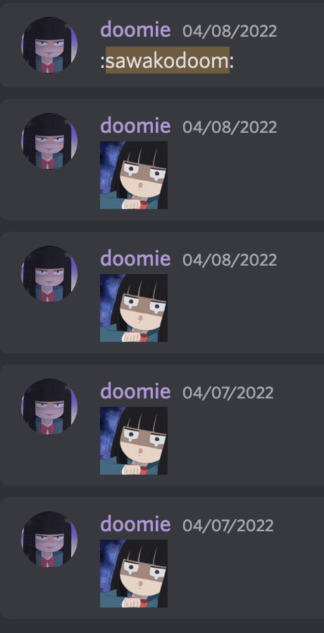
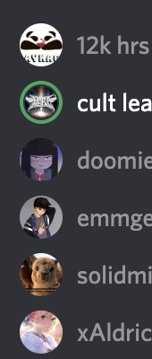
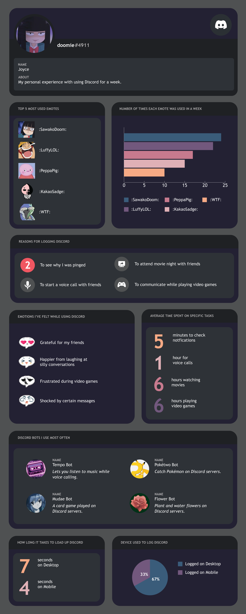

Pitch Ideas
- Youtube
- Instagram
- Discord
- Texting/Facetime
- Wordle
- Hello Sweet Days
- Maps
- Crunchyroll
- Photos app
- Phone Interface i.e. the way apps are arranged, how often I use
a certain app daily, etc.
Quantitative Data Ideas
- my most popular emotes
- how often I check Discord in a day
- voice-calling (who with or for what reason i.e. playing
games or watching a movie
- average time it takes for me to respond
Qualitative Data Ideas
- why I decided to log onto Discord i.e. to respond to a message
or to call someone
- how did I feel before logging on Discord versus after i.e. happier
because of a pleasant interaction
Reflection
- All Information was collected on Discord over the span of a week.
I often had to remember to keep track of time i.e. how long calls were lasting, or how
long my friends and I were watching movies. I also made mental notes of what I felt,
although most of my occurrences on Discord have been positive and happy. I had never made
an infographic beforehand, so it was a lot of fun getting to design something that
would be visually captivating while still providing the necessary information.
Documentation
- Information was collected through Discord, where I was able to find most
quantitative data through the program itself.


Final Infographic
